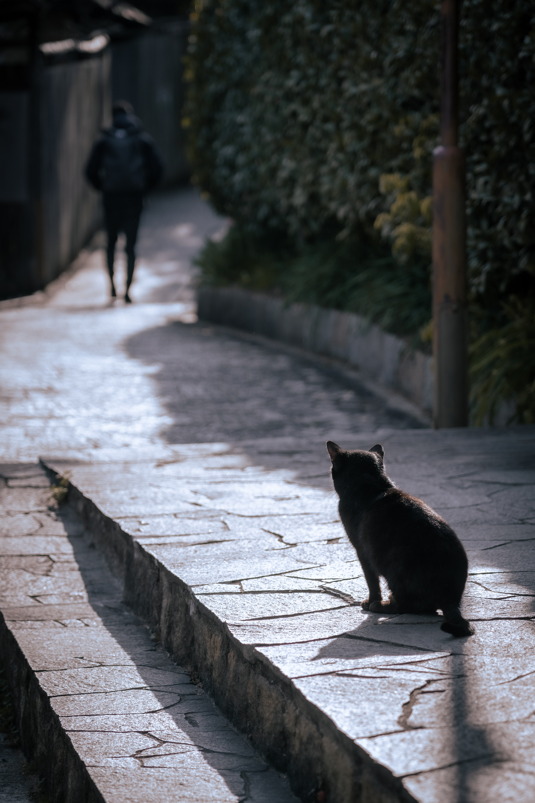
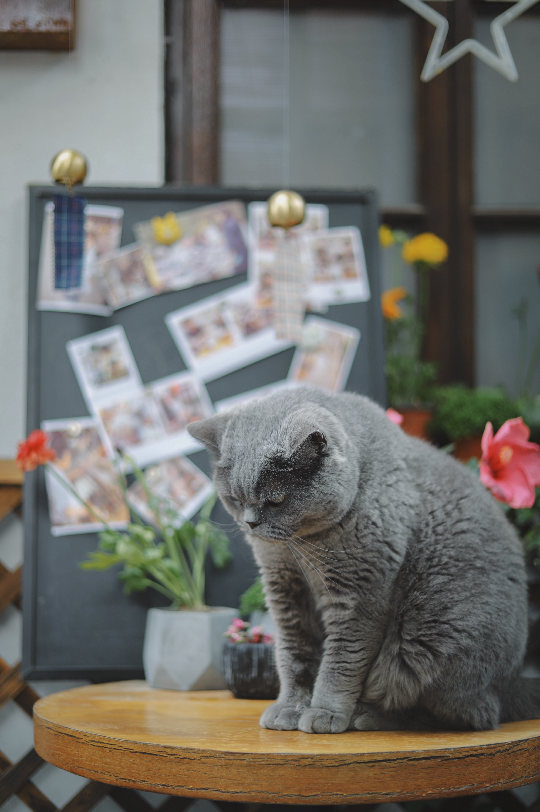
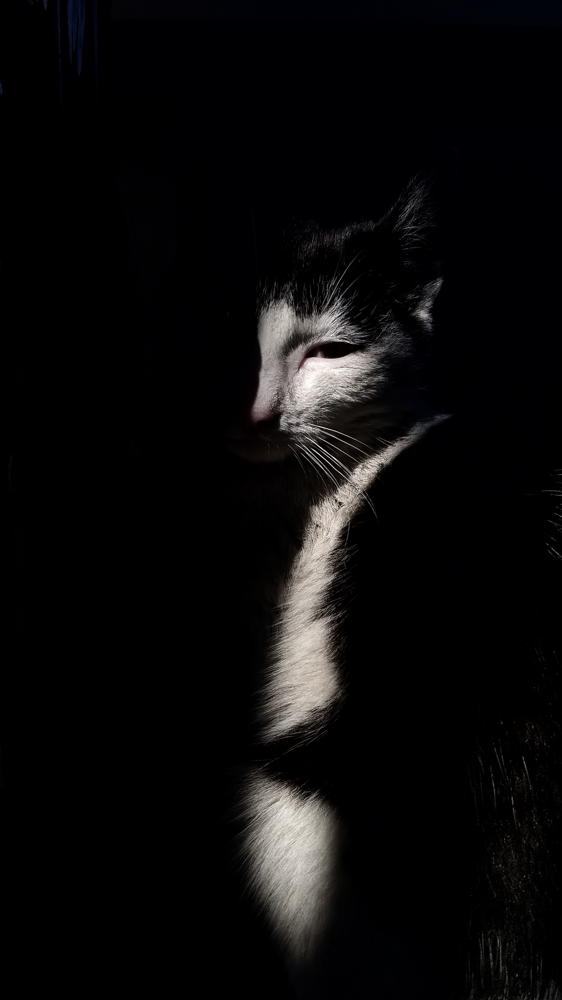

A Few Things to Think About

"When you are sorrowful look again in your heart, and you shall see that in truth you are weeping for that which has been your delight" -Khalil Gibran

"Time spent with a cat is never wasted" -Sigmund Freud

"No one can truly understand the bond that we form with the cats we love until they experience the loss of one" -Obama

"Some angels don't have wings, they have whiskers" -Unknown